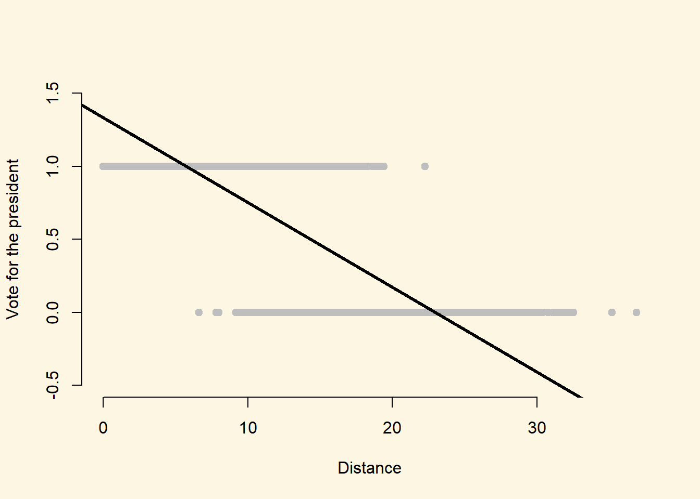
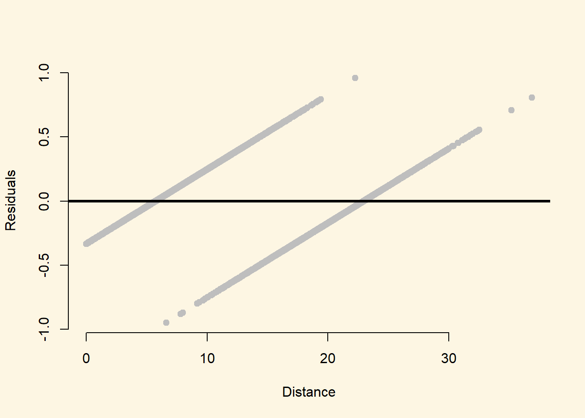
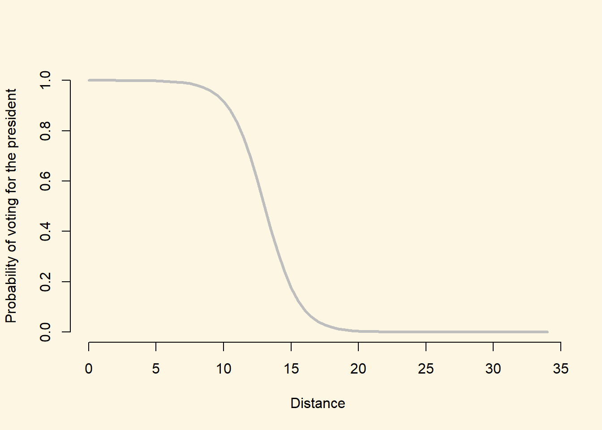

Chapter 11 Binary Dependent Varible Models
11.1 Seminar
11.1.1 Required Packages
Let’s start by loading the required packages:
library(foreign)
library(texreg)
library(lmtest)
library(sandwich)Clear the environment
rm(list = ls())11.1.2 Loading Data
We will be using data from the Afrobarometer (a public attitude survey on democracy and governance in more than 35 countries in Africa) to investigate whether a political candidate can utilize his wife’s ethnicity to garner coethnic support. This is linked to a broad research theory which implies that voters in Africa prefer to vote for candidates of their own ethnic group, and that if a presidential candidate marries a non-coethnic wife, this may broaden their electoral appeal to other ethnic groups.
We will focus only African democracies where the president and wife are not of the same ethnicity are considered (i.e., the president and wife are not coethnic with one another). We will investigate whether voters are more likely to vote for the a president when the voter shares the same ethnicity as the president’s wife.
First, let’s load the data directly from GitHub:
afb <- read.csv("https://raw.githubusercontent.com/UCLSPP/datasets/master/data/afb_class.csv")The table below gives an overview of the variables included in the data.
| Variable | Description |
|---|---|
country |
A character variable indicating the country of the respondent |
wifecoethnic |
1 if respondent is same ethnicity as president’s wife, and 0 otherwise |
oppcoethnic |
1 if respondent is same ethnicity as main presidential opponent, and 0 otherwise |
ethnicpercent |
Respondent’s ethnic group fraction in respondent country |
distance |
Distance between respondent’s home and the home city of the president (measured in hundreds of miles) |
vote |
1 if respondent would vote for the president, 0 otherwise |
Now take a look at the first few observations to see what the dataset looks like
head(afb) country wifecoethnic oppcoethnic ethnicpercent vote distance
1 benin 1 1 0.4173623 1 5.449764
2 benin 1 1 0.4173623 0 18.510687
3 benin 1 1 0.4173623 0 26.370297
4 benin 1 1 0.4173623 0 21.012341
5 benin 1 1 0.4173623 0 22.238316
6 benin 1 1 0.4173623 1 1.82216711.1.3 Linear regression with a Binary Dependent Variable
Before moving on to the new model, we can illustrate some of the shortcomings of the linear regression model when working with binary outcome variables.
Let’s run a linear regression (here, a linear probability model) where vote is our dependent variable, and distance is our independent variable. Try doing this yourself before revealing the solution code below.
linear_mod <- lm(vote ~ distance, data = afb)
screenreg(linear_mod)
========================
Model 1
------------------------
(Intercept) 1.33 ***
(0.01)
distance -0.06 ***
(0.00)
------------------------
R^2 0.70
Adj. R^2 0.70
Num. obs. 4552
RMSE 0.27
========================
*** p < 0.001, ** p < 0.01, * p < 0.05The model shows that there is a strong and significant bivariate relationship between distance and vote choice for the president. Specifically, the model suggest that increasing the distance between the respondent and the president’s home city by 100 miles decreases the probability that the respondent will vote for the president by 6 percentage points on average.
As we discussed in lecture, however, the linear probability model can lead to some odd conclusions with regard to fitted values. Let’s plot the two variables above, and include the estimated regression line.
plot(
x = afb$distance,
y = afb$vote,
pch = 19,
col = "grey",
xlab = "Distance",
ylab = "Vote for the president",
ylim = c(-.5, 1.5),
frame.plot = F)
abline(linear_mod, lwd = 3)
As we can see from the plot, because the functional form of the linear probability model is linear, the estimated relationsip suggests that for respondents with a distance value greater than about 23 have a negative probability of voting for the president, and respondents with a distance value less than about 5 have a probability of voting for the president that is greater than 1.
11.1.3.1 Adjusted Standard Errors in the Linear Probability Model
Now create a plot of the residuals from the model on the Y-axis, and the distance variable on the X-axis. Try this yourself before revealing the code below.
plot(
x = afb$distance,
y = residuals(linear_mod),
pch = 19,
col = "grey",
xlab = "Distance",
ylab = "Residuals",
frame.plot = F)
abline(h = 0, lwd = 3)
We can see from this plot that the linear probability model is always heteroskedastic – the errors are not evenly distributed around zero for all values of distance.
Because of this problem, we now adjust the standard errors to be heteroskedasticity robust.
corrected_errors <- coeftest(linear_mod, vcov = vcovHC(linear_mod))
screenreg(list(linear_mod,corrected_errors))
===================================
Model 1 Model 2
-----------------------------------
(Intercept) 1.33 *** 1.33 ***
(0.01) (0.01)
distance -0.06 *** -0.06 ***
(0.00) (0.00)
-----------------------------------
R^2 0.70
Adj. R^2 0.70
Num. obs. 4552
RMSE 0.27
===================================
*** p < 0.001, ** p < 0.01, * p < 0.05In this instance, the adjustment did not change our substantial conclusion. However, we still always need to adjust standard errors when we estimate the linear probability model.
11.1.3.2 Classification
Our binary variable is either 0 or 1. With the linear probability model, we predict the underlying (and fundamentally unobserved) probability that the outcome is 0 or 1. In order to decide whether an outcome is 0 or 1, we follow a simple rule: Every outcome with a probability of greater or equal 0.5 is assigned a 1 and a 0 otherwise. First, we create a new variable called lm_pps. Those are our model predictions or fitted values. They are predicted probabilities that the outcome is 1 - with the downside that we can get predictions outsied the 0 to 1 interval.
# predicted probabilities
afb$lm_yhats <- linear_mod$fitted.values
summary(afb$lm_pps)Length Class Mode
0 NULL NULL Let’s turn our predictions into outcomes of either 0 or 1 using the ifelse() function. The first argument of the function is a logical condition that is true or false for every observation that is evaluated. The second argument specifies what to do if the condition is true and third argument specifies what to do if the condition is not met (false).
# expected values
afb$exp.vals <- ifelse( afb$lm_yhats >= 0.5, yes = 1, no = 0 )
table(afb$exp.vals)
0 1
2066 2486 We predict 2066 zeroes and 2486 ones. How good is this. We cannot use R^2 as a model fit statistic for models with binary dependent variables. It is impossible that all values are on the regression line. Let’s examine the outcome variable vote first.
summary(afb$vote) Min. 1st Qu. Median Mean 3rd Qu. Max.
0.0000 0.0000 1.0000 0.5464 1.0000 1.0000 The mean is ~0.55. Therefore, 55 per cent of the respondents would vote for the president. It also means that a classification model must be better than predicting 55 per cent of the outcomes correctly. Otherwise, it is no better than the naive guess.
What is the naive guess? It is simply the modal category. In our case, it is 1 because 55 per cent of the respondents would vote for the president and 45 would not.
If our model does not predict more than 55 per cent of outcomes correctly, it makes no contribution. We must always pass this minimum test. Let’s compare actual outcomes to our expected values (the predictions from our model).
out.table <- table(prediction = afb$exp.vals, truth = afb$vote)
out.table truth
prediction 0 1
0 1922 144
1 143 2343On the diagonal, we see the correct predictions and on the off-diagonal, we see the errors. If we sum up the diagonal and divide by the total, we get the per cent correctly classified. Recall, it must be larger than 55 per cent.
# per cent correctly classified
cc.lm <- sum(diag(out.table)) / sum(out.table)
cc.lm[1] 0.9369508The mdoel does extremely well. We correctly classify 94 of all cases. A substantial improvement on the naive guess. Let’s move on and compare our linear model to the logistic regression approach.
11.1.4 Logistic Regression Model
We use the generalized linear model function glm() to estimate a logistic regression. The syntax is very similar to the lm regression function that we are already familiar with, but there is an additional argument that we need to specify (the family argument) in order to tell R that we would like to estimate a logistic regression model.
| Argument | Description |
|---|---|
formula |
As before, the formula describes the relationship between the dependent and independent variables, for example dependent.variable ~ independent.variable In our case, we will use the formula: vote ~ wifecoethnic + distance |
data |
Again as before, this is simply the name of the dataset that contains the variable of interest. In our case, this is the dataset called afb. |
family |
The family argument provides a description of the error distribution and link function to be used in the model. For our purposes, we would like to estimate a binary logistic regression model and so we set family = binomial(link = "logit") |
We tell glm() that we’ve binary dependent variable and we want to use the logistic link function using the family = binomial(link = "logit") argument:
logit_model_1 <- glm(vote ~ wifecoethnic + distance,
family = binomial(link = "logit"), data = afb)
screenreg(logit_model_1)
===========================
Model 1
---------------------------
(Intercept) 11.66 ***
(0.42)
wifecoethnic -1.36 ***
(0.17)
distance -0.79 ***
(0.03)
---------------------------
AIC 1364.65
BIC 1383.92
Log Likelihood -679.33
Deviance 1358.65
Num. obs. 4552
===========================
*** p < 0.001, ** p < 0.01, * p < 0.05Interpreting the output of a logistic regression model is less straightforward than for the linear model, because the coefficients no longer describe the effect of a unit change in X on Y. Instead, the direct interpretation of the coefficient is: a one unit change in X is associated with a \(\hat{\beta}\) change in the log-odds of Y, holding constant other variables. Here, the coefficient on wifecoethnic is equal to -1.36, implying that the log-odds of voting for the president are 1.36 lower when the respondent has the same ethnicity as the president’s wife, holding constant distance.
The interpretation of the significance of the coefficients remains unchanged from the linear regression model. For example, the standard error for the coefficient on wifecoethnic is 0.17, and the test statistic is therefore -1.36/0.17 = -8. This is much greater than the critical value of any conventionally used \(\alpha\)-level and so we can be sure that this result is statistically significant. We will speak more about statistical inference for logit coefficients next week.
11.1.5 Odds-ratios
Differences in the log-odds, however, are difficult to interpret substantively. There are two main approaches to describing the substantive relationships that emerge from a logistic regression model. 1) odds-ratios, and 2) predicted probabilities.
Converting log-odds differences to odds-ratios is very straightforward. As the log function is the inverse of the exponential function, we can simply exponentiate the coefficient associated with wifecoethnic:
beta_wifecoethnic <- coef(logit_model_1)[["wifecoethnic"]]
exp(beta_wifecoethnic)[1] 0.2556929And we can do the same for the coefficient associated with distance:
beta_distance <- coef(logit_model_1)[["distance"]]
exp(beta_distance)[1] 0.4539435We can then interpret the odds-ratios as follows:
- When the respondent shares the same ethnicity as the president’s wife the odds of voting for the president are multiplied by 0.26, holding constant the distance between the respondent and the president’s home city (i.e. they decrease by 74%)
- Increasing the distance between the respondent and the president’s home city by 100 miles, holding constant whether the respondent shares the same ethnicity as the president’s wife, multiplies the odds of voting for the president by 0.45, (i.e. the odds decrease by 55%)
- In general, when X increases by one unit, the odds of the outcome \(Y = 1\) are multiplied by \(exp(\hat{\beta})\), holding other factors constant
11.1.6 Predicted probabilities
Thinking in terms of odds may not be much better than thinking in terms of log-odds, and so often the most useful discussion of the substantive effect sizes is in terms of predicted probabilities.
We can use the predict() function to calculate fitted values for the logistic regression model, just as we did for the linear model. Here, however, we need to take into account the fact that we model the log-odds that \(Y = 1\), rather than the probability that \(Y=1\). The predict() function will therefore, by default, give us predictions for Y on the log-odds scale. To get predictions on the probability scale, we need to add an additional argument to predict(): we set the type argument to type = "response".
For example, if we would like to calculate the predicted probability of voting for the president for a respondent who shares the same ethnicity as the president’s wife, and lives 1000 miles from the president’s home city, we could use:
pred_prob_1 <- predict(logit_model_1, newdata = data.frame(wifecoethnic = 1, distance = 10), type = "response")
pred_prob_1 1
0.91698 The tells us that the probability of a respondent with these covariate values voting for the president (\(Y=1\)) is 0.92, based on this model.
At home, we want you to estimate the predicted probability for this scenario by doing the transformation yourself. You can compare your results with the code below
# get fitted values using predict function - not transformed back to probabilities
pred_prob_1a <- predict(logit_model_1, newdata = data.frame(wifecoethnic = 1, distance = 10))
pred_prob_1a 1
2.402004 # send the fitted values through the link function
exp(pred_prob_1a) / (1 + exp(pred_prob_1a)) 1
0.91698 # get fitted values by hand
pred_prob_1b <- coef(logit_model_1)[1] + coef(logit_model_1)[2] * 1 + coef(logit_model_1)[3] * 10
# below we use as.numeric() only because otherwise R labels the result intercept which it is not
pred_prob_1b <- as.numeric(pred_prob_1b)
pred_prob_1b[1] 2.402004## send fitted values through the link function
exp(pred_prob_1b) / (1 + exp(pred_prob_1b))[1] 0.91698How does this predicted probability compare to the predicted probability of voting for the president for a respondent who is not coethnic with the president’s wife, and lives 1000 miles from the president’s home city? We can just use the predict() function again, but specify a different value for wifecoethnic to use for the prediction:
pred_prob_2 <- predict(logit_model_1, newdata = data.frame(wifecoethnic = 0, distance = 10), type = "response")
pred_prob_2 1
0.9773743 Comparing the two predicted probabilities, the model tells us that for respondents who live 100 miles from the president’s home city, sharing the ethnicity of the president’s wife decreases the probability of voting for the president by about 6 points:
pred_prob_1 - pred_prob_2 1
-0.0603943 Notice that this “finding” is the opposite of the prediction from the theory: respondents do not seem to be more likely to vote for the president if they share the same ethnicity as the president’s wife. Of course, here we are dealing with a very simple model with many possible confounding variables that we have not included in the model!
As discussed in lecture, the logistic model implies a non-linear relationship between the X variables and the outcome. To see this more clearly, we can calulate the probability of voting for the president over the entire range of the distance variable.
## Set the values for the explanatory variables
data_for_predicted_prob <- data.frame(distance = seq(from = 0, to = 34, by = .5),
wifecoethnic = 1
)Here, we have set the distance variable to vary between 0 and 34, with increments of .5 units and we have set wifecoethnic to be equal to 1. We have then put all of these values into a new data.frame called data_for_predicted_prob which we will pass to the predict() function.
# Calculate the fitted values
predicted_probs <- predict(logit_model_1, newdata = data_for_predicted_prob, type = "response")
## Save the fitted values as a new variable in the data_for_fitted_values object
data_for_predicted_prob$predicted_probs <- predicted_probsFinally, we can plot these values:
plot(
predicted_probs ~ distance, # Specify the formula for the plot (dependent.variable ~ independent.variable)
data = data_for_predicted_prob, # Specify the data to use for the plot
xlab = "Distance", # Specify the X-axis title
ylab = "Probability of voting for the president", # Specify the Y-axis title
frame.plot = FALSE, # The frame.plot = FALSE argument removes the box from around the plot
col = "grey", # The col argument specifies the color
type = "l", # type = "l" will produce a line plot, rather than the default scatter plot
lwd = 3 # lwd = 3 will increase the thinkness of the line on the plot
)
The plot nicely illustrates the non-linear functional form of the logistic regression model. As desired, all of the predicted probabilities now vary between 0 and 1, as the line takes on a distinctive “S” shape. It is clear from this plot that X (distance) is non-linearly related to the probability that \(Y=1\) (\(P(Y = 1) = \pi\)): the same change in X results in difference changes in \(\pi\) depending on which values of X we consider. For example:
- Increasing
distancefrom 5 to 10 leads to a decrease in \(\pi\) of only a very small amount - Increasing
distancefrom 10 to 15 leads to a decrease in \(\pi\) of a very large amount
This is why we are unable to interpret the \(\beta\) coefficients from the logistic model as constant increases or decreases in \(\pi\) given a change in X. For any given change in X, the amount that \(\pi\) will change will depend on the starting value of X that we are considering.
Finally, we can also see the non-linearity inherent in the logistic model by calculating the difference in predicted probability between respondents who share the ethnic group of the president’s wife and respondents who come from different ethnic groups than the president’s wife, at different values of the distance variable. Let’s calculate this difference for distance = 10 and distance = 12:
prob_coethnic_dist10 <- predict(logit_model_1, newdata = data.frame(wifecoethnic = 1, distance = 10), type = "response")
prob_not_coethnic_dist10 <- predict(logit_model_1, newdata = data.frame(wifecoethnic = 0, distance = 10), type = "response")
prob_coethnic_dist10 - prob_not_coethnic_dist10 1
-0.0603943 prob_coethnic_dist12 <- predict(logit_model_1, newdata = data.frame(wifecoethnic = 1, distance = 12), type = "response")
prob_not_coethnic_dist12 <- predict(logit_model_1, newdata = data.frame(wifecoethnic = 0, distance = 12), type = "response")
prob_coethnic_dist12 - prob_not_coethnic_dist12 1
-0.2042512 The results indicating that, when comparing respondents with values of 10 on the district variable, coethnics of the president’s wife are 6 points less likey to vote for the president than non-coethnics. However, when comparing respondents with values of 12 on the distance variable, coethnics are 20 points less likely to vote for the president. Therefore, this illustrates that in a multiple logistic regression model the change in \(\pi\) in response to even exactly the same change in one X variable depends on the values at which the other X variables are fixed.
11.1.7 Exercises
We will be using some data from a post-referendum survey among people living in Switzerland. The survey was carried out right after the vote on an initiative whether to ban military assault rifles in private households or not. If you would like to get some more background you may consult the wikipedia article on the referendum, here.
You can load the data from GitHub by running the following code
library(foreign)
swiss <- read.dta("https://raw.githubusercontent.com/UCLSPP/datasets/master/data/SwissData2011.dta")We have access to the following variables:
| Variable | Description |
|---|---|
| VoteYes | 1 if someone voted yes and is 0 if someone voted no. |
| participation | 1 for people that voted and 0 otherwise. |
| male | 1 for men and 0 for women. |
| age | Age in years. |
| LeftRight | Left-Right self placement where low values indicate that a respondent is more to the left. |
| GovTrust | Trust in government. Little or no trust is -1, neither YES nor NO is 0, and +1 if somebody trusts the government. |
| ReligFreq | How frequently does a respondent attend a religious service? Never (0), only on special occasions (1), several times a year (2), once a month (3), and once a week (4). |
| university | Binary indicator (dummy) whether respondent has a university degree (1) or not (0). |
| party | Indicates which party a respondent supports. Liberals (1), Christian Democrats (2), Social Democrats (3), Conservative Right (4), and Greens (5). |
| income | Income measured in ten different brackets (higher values indicate higher income). You may assume that this variable is an interval type measure. |
| german | Binary indicator (dummy) whether respondent’s mother tongue is German (1) or not (0) |
| suburb | Binary indicator (dummy) whether respondent lives in a suburban neighborhood (1) or not (0) |
| urban | Binary indicator (dummy) whether respondent lives in a city (1) or not (0) |
| cars | Number of cars the respondent’s household owns. |
| old voter | Variable indicating whether a respondent is older than 60 years (1) or not (0). |
| cantonnr | Variable indicating in which of the 26 Swiss cantons a respondent lives. |
| nodenomination | Share of citizens in a canton that do not have a denomination. |
| urbanization | Share of citizens in a canton that live in urban areas. |
- Create plots of
agevsVoteYesandLeftRightvsVoteYes. Add a regression line (from a linear probability model) to the plots - Estimate a model which includes
ageandLeftRightas predictors, andVoteYesas the dependent variable - What is the effect of a one-unit increase in
LeftRightonVoteYes? Discuss in terms of odds-ratios - What is the effect of a one-unit increase in
ageonVoteYes? Discuss in terms of odds-ratios - What is the effect on the probability of a “yes” vote of moving from a left-right self placement of 5 to a self placement of 6 for an individual who is 44 years old?
- Calculate and plot the predicted probability of voting yes across the range of the
agevariable for individuals who have a left-right self placement of 5. Do the same across the range of theLeftRightvariable for individuals with an age of 50. - Looking at the other variables in the
swissdata, which do you think might be important determinants of a “yes” vote in the referendum? Write a short paragraph justifying the importance of 3 of the predictors in theoretical terms. Include the additional explanatory variables you have selected in a new model that also includesageandLeftRight. - Provide some predicted probabilities from the model that illustrate the substantive importance of the new variables that you have added